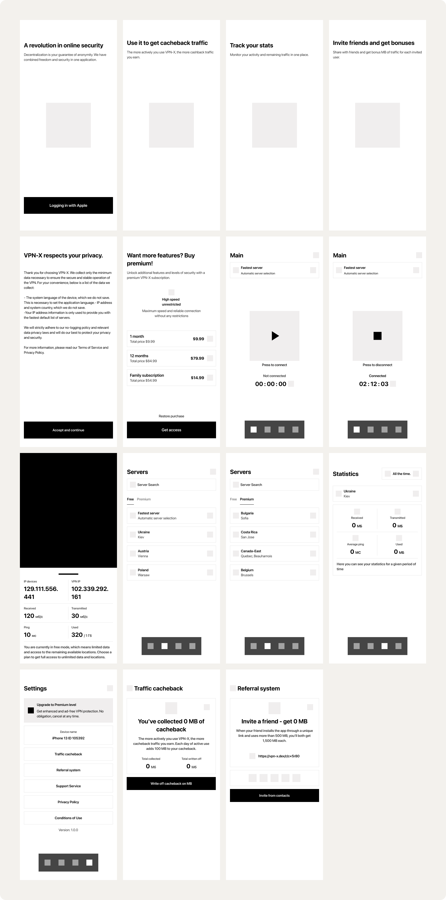
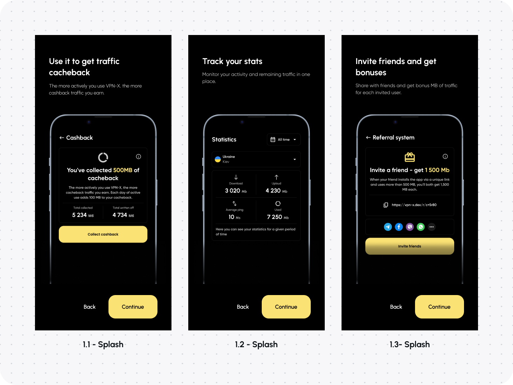
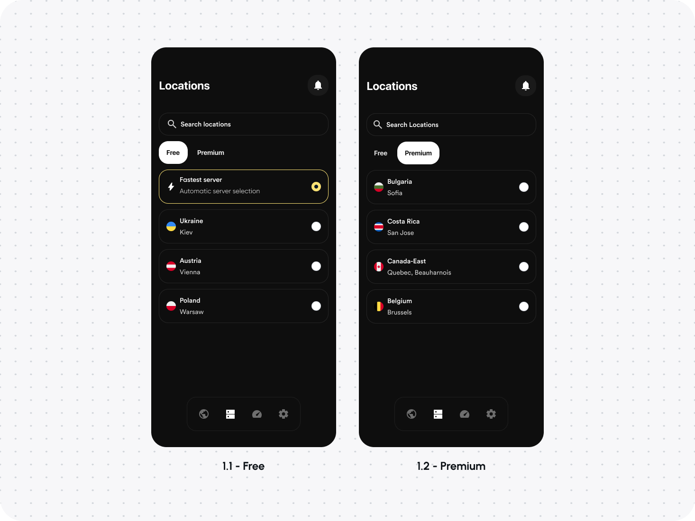

About VPN-X
Про VPN-X
It is an application that not only provides security and anonymity in the realm of virtual private networks, but also offers unique functionalities including decentralized access, a referral system and an innovative cashback program. Let's take a closer look at this exciting concept!
Це додаток, який не тільки забезпечує безпеку та анонімність у сфері віртуальних приватних мереж, але також пропонує унікальні функції, включаючи децентралізований доступ, реферальну систему та інноваційну програму повернення коштів.

Task
Завдання
The challenge I faced was to create an innovative mobile app that could provide users with decentralized access to virtual private networks (VPNs). I also sought to integrate a referral system and a unique cashback mechanism that would allow users to earn bonuses for using the app and redeem them for additional traffic.
Переді мною стояло завдання створити інноваційний мобільний додаток, який міг би надати користувачам децентралізований доступ до віртуальних приватних мереж (VPN). Я також прагнув інтегрувати реферальну систему рефералів та унікальний механізм кешбеку, який дозволив би користувачам заробляти бонуси за використання додатку та обмінювати їх на додатковий трафік.
Problem
The problem that many users of modern VPN services face is their centralized nature and lack of security. In addition, many existing solutions do not provide any incentives or rewards to users. My goal was to create an app that would not only solve these problems, but also provide users with additional bonuses.
Проблема
Проблема, з якою стикаються багато користувачів сучасних VPN-сервісів, полягає в їх централізованому характері та недостатній безпеки. Крім того, багато існуючих рішень не передбачають жодних стимулів чи винагород для користувачів. Моєю метою було створити додаток, який би не тільки вирішував ці проблеми, але й надавав користувачам додаткові бонуси.
Decision
As a result, it turned out to design the VPN-X DEX application, which provides decentralized access to VPN servers, ensuring the highest level of security and anonymity. With the help of a referral system, users can invite friends and receive bonuses for each new user. Users can accumulate cashback for each megabyte of traffic transferred and then exchange it for additional traffic, which makes using VPN-X DEX not only safe but also profitable.
Рішення
В результаті вийшло розробити додаток VPN-X DEX, який забезпечує децентралізований доступ до VPN-серверів, забезпечуючи найвищий рівень безпеки та анонімності. За допомогою реферальної користувачі можуть запрошувати друзів і отримувати бонуси за кожного нового користувача. Користувачі можуть накопичувати кешбек за кожен переданий мегабайт трафіку, а потім обмінювати його на додатковий трафік, що робить використання VPN-X DEX не тільки робить використання VPN-X DEX не тільки безпечним, але й вигідним.
User person
Особа користувача

Wireframe
Каркас
Onboarding
Onboarding
Home
Головна

Locations
Локації
Other screens
Інші екрани


Conclusion
In summary, VPN-X DEX is a revolutionary application that combines security, decentralization and economic benefits. This project demonstrates how modern technology can be used to solve current problems and provide additional benefits to the user. I am proud of the results of this work and I am confident that VPN-X DEX has the potential to change the way we perceive and use VPN services.
Висновок
Таким чином, VPN-X DEX - це революційний додаток, який поєднує в собі безпеку, децентралізацію та економічну вигоду. Цей проект демонструє, як сучасні технології можуть бути використані для вирішення актуальних проблеми та надавати додаткові переваги користувачеві. Я пишаюся результатами цієї роботи і впевнений, що VPN-X DEX має потенціал, щоб змінити те, як ми сприймаємо і використовуємо VPN-сервіси.